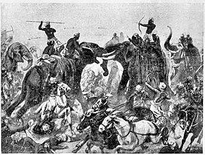

Chalukyas invades Pallavas
The Pallavas were the southern neighbours of the Chalukyas.
The Vishnukundins were their allies at the time, and Pulakeshin's subjugation of the
Vishnukundins brought him in conflict with the Pallava king.
The Chalukyas and the Pallavas fought several battles without conclusive results.
The Aihole inscription states that the Pallava ruler opposed the rise of Pulakeshin, who caused the enemy's splendour to be "obscured by the dust of his army"
and forced the enemy to take shelter behind the walls of the Pallava capital Kanchipuram.
The Kashakudi inscription of the Pallavas states that the
Pallava King Mahendravarman defeated an unnamed enemy at Pallalura (modern Pullalur).
These two accounts appear to refer to the same battle,
which must have been inconclusive: the Pallava army was probably forced to retreat to Kanchipuram, but inflicted enough damage on the Chalukya army
to force Pulakeshin to retreat to Vatapi.
The undated Peddavaduguru inscription records Pulakeshin's grant of the Elpattu Simbhige village in Bana-raja-vishaya after
the subjugation of Ranavikrama. Assuming that Ranavikrama was a Bana king, it appears that Pulakeshin defeated the Banas.
The Banas appear to have been Pallava feudatories before their submission to Pulakeshin, as suggested by the name of the inscription's engraver: Mahendra Pallavachari.
Pulakeshin's subjugation of a Pallava feudatory must have renewed his conflict with the Pallavas.
The Aihole inscription suggests that Pulakeshin won over the Chola, the Chera, and the Pandya kings as his allies in his struggle against the Pallavas.
He marched towards Kanchipuram, but the Pallava inscriptions suggest that he suffered reverses in battles fought at Pariyala, Suramara,
and Manimangala, near Kanchipuram.
The Pallavas, during the reign of Narasimha-varman I, ultimately besieged the Chalukya capital Vatapi.
Pulakeshin was probably killed, when a Pallava force led by Shiruttondar Paranjoti captured Vatapi in 642–643 CE.
The Pallava occupation of Vatapi is attested by an inscription found at the Mallikarjunadeva temple in Badami, dated to the 13th regnal year of Narasimha-varman.